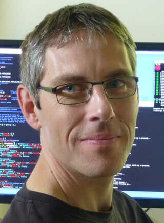
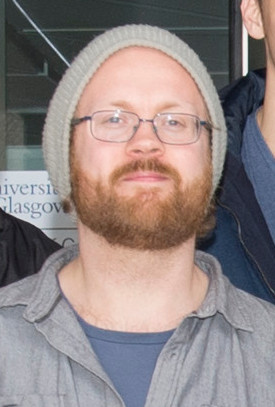

Academic Partners
University of Glasgow

Prof. Wim Vanderbauwhede
Prof Dr Wim Vanderbauwhede has been a lecturer & researcher in the School of Computing Science at the University of Glasgow since April 2004. His research interests are mainly in the field of programming languages and parallel architectures such as FPGAs, manycore processors and GPGPUs.
Dr. José Cano Reyes
Jose is a Lecturer (Assistant Professor) in the School of Computing Science at the University of Glasgow, where he is a member of the GLAsgow Systems Section (GLASS) and the Glasgow Parallelism Group (GPG). Jose's interests are in the broad areas of: Computer Architecture, Computer Systems, Compilers, Interconnection Networks and Machine Learning. '

Dr. Jan de Muijnck-Hughes
Jan is a Research Associate at the School of Computing at the University of Glasgow, where he investigates the construction of Structural and Behavioural Type-Systems for hardware design. Generally speaking, his research interests are revolved around the Type-Driven Development of Communicating Systems using Dependent Types, Session Types, and Algebraic Effects as presented in the dependently typed programming language Idris.
University of Essex
Prof. Klaus McDonald-Maier
Klaus McDonald-Maier is a Professor in the School of Computer Science and Electronic Engineering (CSEE) at the University of Essex where he leads the Embedded and Intelligent Systems (EIS) Research Laboratory, heads the Intelligent Embedded Systems and Environments Research Group and is Director of Impact.
Dr. Xiaojun Zhai
Dr. Xiaojun Zhai is a lecturer at the School of Computer Science and Electronic Engineering (CSEE) at the University of Essex.
Imperial College London
Prof. Nobuko Yoshida
Nobuko Yoshida is Professor of Computing at Imperial College London. Last 10 years, her main research interests are theories and applications of protocols specifications and verifications.
Note: Icons made by SimpleIcon from www.flaticon.com is licensed by CC 3.0 BY